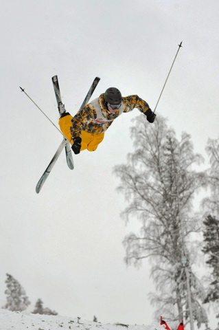

Фристайл
Понятие «фристайл» у современной молодежи ассоциируется скорее с неким танцевальным направлением, нежели с Олимпийскими играми.
Настоящие ценители зимних видов спорта, конечно же, знают, что фристайл – необычайно интересный, красивый и захватывающий дух вид лыжного спорта.
Что же из себя представляет этот загадочный фристайл?
В данном виде спорта существует несколько разновидностей. Это – лыжная акробатика, могул, ски-кросс и слоупстайл. Интересно, что до 1999 года в программу официальных соревнований по фристайлу входила и такая близкая каждому россиянину дисциплина как балет. Да-да, не удивляйтесь – лыжный балет являлся частью фристайла.
Конечно, «Лебединое озеро» на лыжах станцевать довольно проблематично, однако, суть балета состояла в том, что участник спускается по пологому склону под музыкальное сопровождение с выполнением различных элементов фристайла: шаги, скольжения, прыжки, вращения и т.д. Увы, данная дисциплина не смогла хорошо зарекомендовать себя как на уровне международной федерации, так и на уровне простых болельщиков, а потому соревнования по лыжному балету больше не проводятся. Как знать, быть может через какое-то время все еще поменяется.
Теперь о тех видах программы, которые и по сей день представлены в данном виде спорта. В лыжной акробатике спортсмены выполняют серию из двух прыжков разной сложности. Прыжки совершаются со специально возведенного снежного трамплина. Участники зарабатывают очки за технику отрыва от трамплина, фигуру, траекторию полета и приземление. У каждого прыжка есть свой коэффициент сложности.
В могуле спортсмены противостоят сложной бугристой трассе. На протяжении всего склона присутствуют своего рода кочки, между которыми участники вынуждены лавировать. Помимо этого, на склоне во время спуска в могуле есть два трамплина, на которых лыжники выполняют два прыжка. Итоговая оценка зависит как от качества и сложности прыжков, так и от времени прохождения спуска.
Ски-кросс – одна из самых динамичных и зрелищных дисциплин. Она представляет из себя гонку по специальной горнолыжной трассе, где на пути участников встречаются различные препятствия: виражи, мини-трамплины, волны и тд. В основном раунде соревнований по ски-кроссу спортсмены распределяются на заезды по четыре человека в каждом и соревнуются по олимпийской системе на выбывание.
Дисциплина «Слоупстайл» является самой молодой. В 2014 году на Олимпийских играх в Сочи этот вид программы дебютирует на олимпиадах. Суть слоупстайла заключается в том, что спортсмены выполняются серии акробатических прыжков на трамплинах, уклонах, перилах и других конструкциях, расположенных вдоль всего склона.
Первый официальный чемпионат мира по фристайлу был проведен в 1986 году в швейцарском Энгельсберге. На олимпиаде зрители впервые увидели фристайл двумя годами позже – в 1988 году этот вид спорта впервые был представлен на Олимпийских играх в канадском Калгари в качестве демонстрационных соревнований. Первые же олимпийские медали были разыграны на Играх-1992 года в Альбервиле.
Кстати, в розыгрыше первого комплекта медалей поучаствовали и российские спортсмены. Елизавета Кожевникова стала обладательницей серебряной награды в могуле. Федерация Фристайла СССР была создана в 1988 году.
{kind=link}
{kind=link}
{kind=link}
{kind=link}
{kind=link}